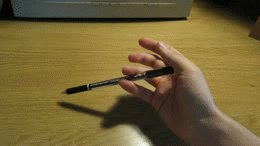

Cognitive Science Student, CS Enthusiast, Melee Player, Button Presser
I am the former president of the Yale College Chess Club.
I used to play pretty frequently in tournaments but not so much anymore. I tend towards gambit openings and sharp positions, since I learned this game by grinding chess tactics puzzles. I play Blackmar-Diemer Gambit as white and Icelandic/Portugese/Budapest gambit as black.
I study Japanese in my spare time. My primary resources are Anki for Vocabulary and Kanji, and Tae Kim for Grammar.
I like games that feel like mastering them is a rewarding process. Because of this I tend towards competitive multiplayer games or quantifiable single-player games.
I played osu! pretty frequently, although I don't as much anymore because it's pretty tough on my hands. I'm a tablet player that primarily plays aim maps and I'm trying to eventually learn HDDT.
I have a real soft spot for Earthbound, and I also really enjoyed Undertale.
I've always been fascinated with speed and precision in dextrous tasks and as such have a bunch of little hobbies that come from this interest.
I like penspinning, I'm not the most skilled at it but it looks cool and I think it's fun
I like Juggling! I can't juggle very many objects at once, but I know a pretty reasonable amount of 3-ball patterns
I occasionally do things with Dice Stacking, but I haven't recorded myself doing it since 7-8 years ago and I'm not in any shape to do so now. (You can watch a video of someone else though!)
I used to be really into Rubik's Cubes, and my personal best was 28 seconds. I used a variation of Fridrich F2L.